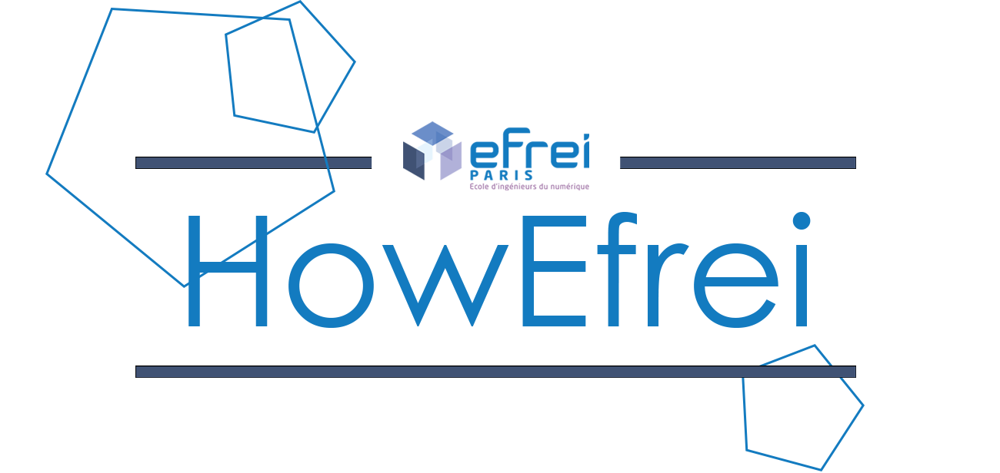

Bienvenue sur la page ou tu trouveras les différents événements de l'EFREI !
N'h√©sitez pas a scroller üòâ
Passer une bonne année a l'EFREI
1e étape : Participer aux WEI
Le WEI, c'est vraiment le truc a faire a l'EFREI. C'est 3 jours d'activités, de découvertes, des soirées, du fun et un max de rencontre.
Une petite mise en bouche avec la vidéo du WEI 2k19 :
2e étape : L'éléction du BDE
Le BDE (Bureau Des Etudiants) organise les différentes activités qui auront lieu pendant l'année a l'EFREI ou a l'exterieur.
Chaque année en mars, un nouveau BDE est élu par les étudiants de l’école au terme d’une semaine de campagne qui voit le campus se métamorphoser et revêtir les couleurs de toutes les équipes en lice. Les différentes listes BDE rivalisent d’ingéniosité et de surprises pour attirer l’attention et faire en sorte que les élèves adhèrent à leur programme
Chaque année, le BDE propose déjeuners, PODs (POts Dinatoires), semaine de ski, soirées étudiantes…
3e étape : Les PODs
Les PODs sont partie intégrante de la vie étudiante, c'est le moment de décompresser et de ne plus penser aux cours mais de s'amuser
Ils ont lieu dans la Kfet de l'école, avec Le Continental, l'association bar/Kfet. Pendant ces soirées, les bières sont a 50 centimes, des burgers a 2€ et autre, le tout en musique avec l'HIFI-LIX, l'association de mix.
Tout ce qu'il faut pour passer une bonne soirée en somme.